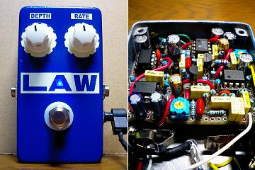
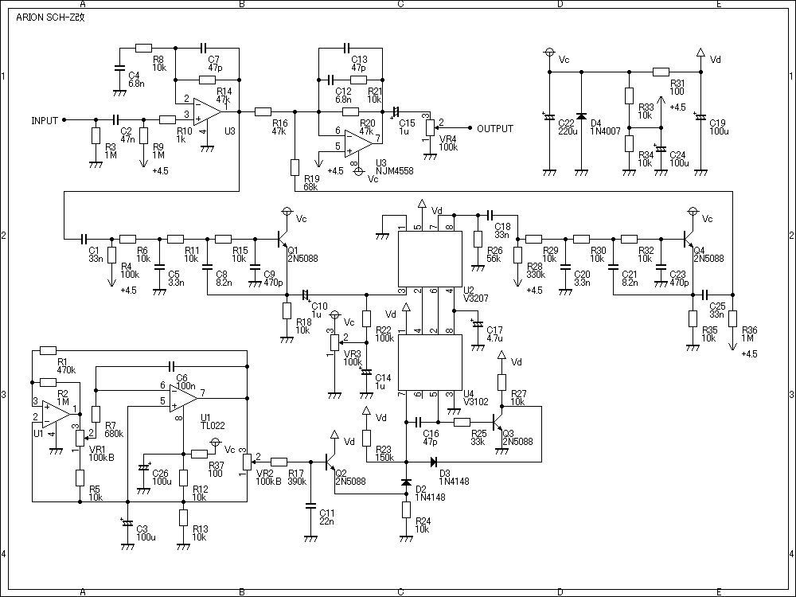
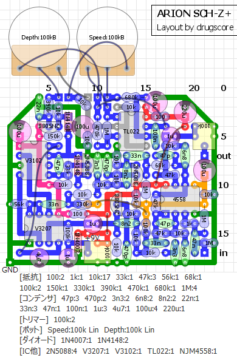
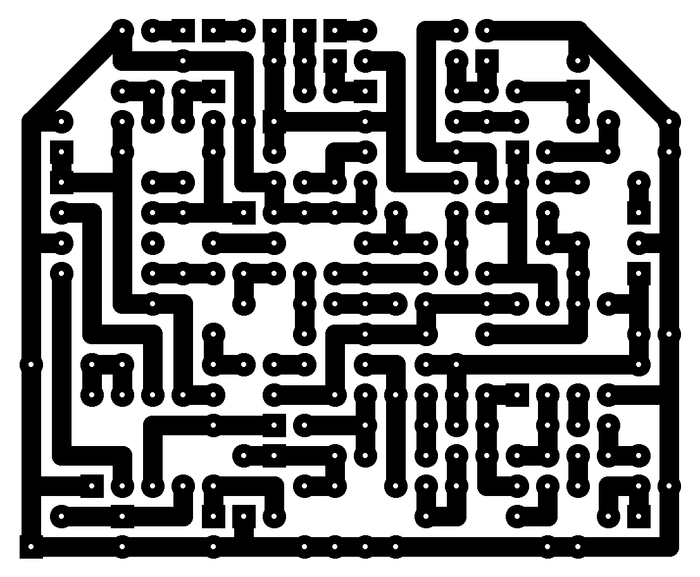

ARION SCH-Z改
2009年02月09日 カテゴリー：自作エフェクター（アナログ）

以前作ったZombie Chorusですが、ノイズ対策の改造をしてちょっと歪んでしまっていましたので、分解して代わりに別のコーラスを入れました。
▽回路図

Garrettaudioで安く売っているV3207とV3102を使ってみたかったので、ARION SCH-Zをベースにしています。フィルター部分はBOSS CE-2をマネしました。出力が反転していますが、Small Cloneもそうなのでまぁいいでしょう。念のため音量調整トリマをつけています。トランジスタは2SC1815でもよさそうですが、レイアウトがやりにくいため2N5088です。
▽レイアウト

▽PCB（横58.4mm縦48.3mm）

MXRサイズに何とか収めました。コーラスのかかりはC16（47p）を大きくするかR19（68k）を小さくするとエグくなります。私はソケットにしておきました。クロックノイズが怖いので、ポットの配線は最短にしておきます。また、電源周辺のコンデンサを100uにしています（100uのストックがたくさんあったのもありますが）。まぁこれは47uでも大丈夫かもしれません。
音はというと、やはりARIONのものと大して変わらない気がします（今アリオンのは手元にないのでよくわかりません）。フィルター部分はCE-2なのでCE-2に近い音かもしれません（CE-2を使ったことないのでよくわかりません…）。上に書いた部品の交換でいろいろセッティングできます。部品が込み合っているのですが、クロックノイズはないようで良かったです。全体のノイズも減ったと思います。